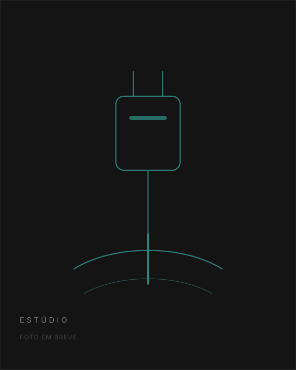
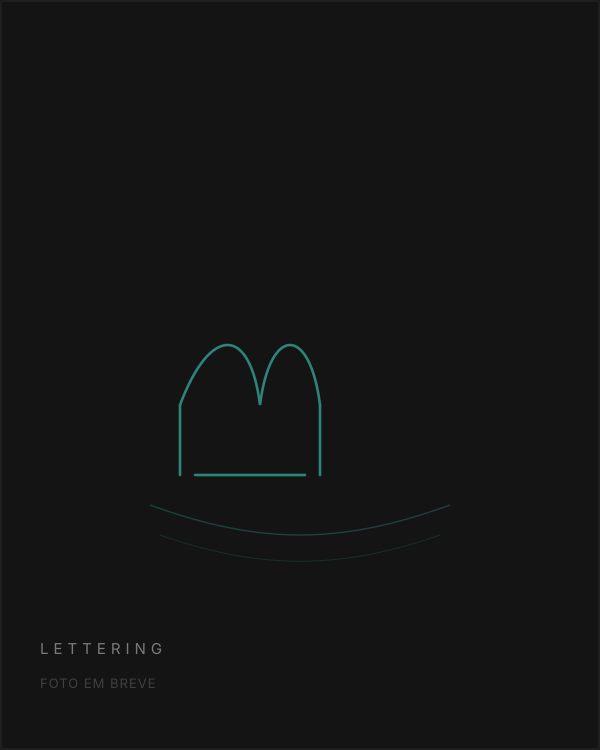

Criciúma · Santa Catarina
Tatuador em Criciúma com 8 anos de experiência
Traço fino, blackwork e projetos autorais. Cada tatuagem é desenhada do zero para caber no seu corpo e contar a sua história.
Sobre o estúdio
O iti.ink tattoo estúdio fica em Criciúma, Santa Catarina. São mais de 8 anos de experiência transformando ideias em tatuagem — com desenho autoral, materiais descartáveis e ambiente reservado.
O atendimento é individual: você conversa direto com o tatuador, define referências, tamanho e local antes de qualquer agulha tocar a pele.
- 8+anos de experiência
- 100%desenho autoral
- 1:1atendimento individual
Estilos de tatuagem
-
Traço fino
Linhas delicadas e minimalistas, com cicatrização limpa e leitura clara na pele.
-
Blackwork
Preto sólido, contraste alto e composições gráficas que envelhecem bem.
-
Realismo
Sombreado em preto e cinza, com profundidade e detalhe em escala média.
-
Autoral
Projeto criado do zero a partir da sua ideia, sem cópia de catálogo.
Portfólio
Trabalhos recentes no estúdio. Novos projetos são publicados toda semana.




Onde estamos
Pronto para a sua próxima tatuagem?
Conte a sua ideia. O orçamento é gratuito e sem compromisso.
Chamar no WhatsApp